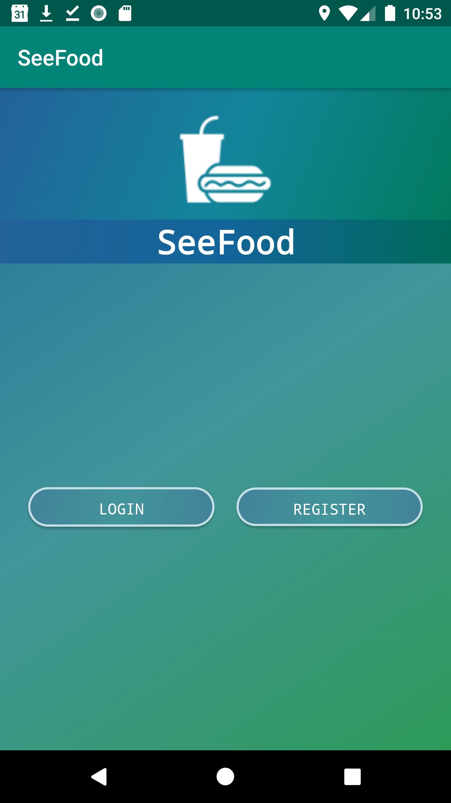
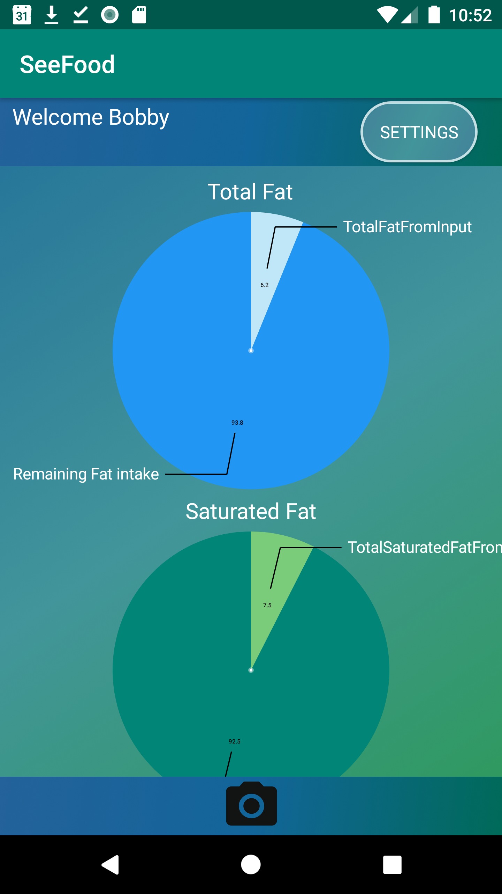

| SeeFood | |
| External link to .apk | |
| External link to source zip | |
|
This app helps users to keep track of their daily nutrition intake based on a default 2000 calories diet. Users will get a picture of a nutrition label package indicated on goods they bought from the folder. Then, the nutrition values and breakdown from the label will stored onto a firestore database The app will pull the data from the firestore database and display it in the piecharts. The piecharts will show the amount of intake when selected on the screen as well as how much left is needed to reach the daily goal. Chart drawn on the app comes in six parts, showing each of the following nutritional values.
The settings page has five buttons:
*When registering a user, the password also has a minimum requirement of length 6 |
|
| > |  |
| Youtube Link | |
List of external libraries and code used in this project
|
|